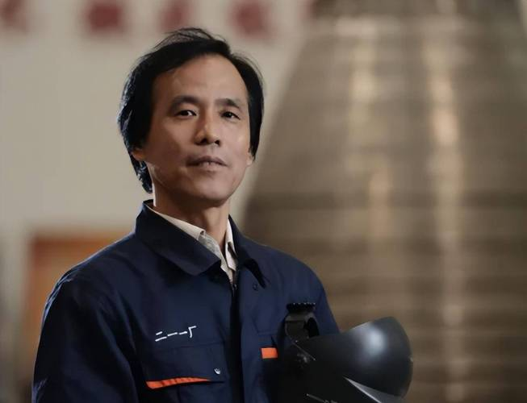

高凤林，中共党员，全国总工会兼职副主席，全国劳动模范，中国航天科技集团有限公司第一研究院211厂发动机车间班组长首席技能专家。40年来扎根一线，一心一意为中国火箭焊接“心脏”，攻克一系列火箭发动机焊接技术世界级难题。
儿时的好奇心促使他考上了如愿以偿的第一研究院211厂技校。当得知自己被分配到焊接专业时，他心灰意冷，认为这与航天工业并无太大关联。直到一次车间实习，改变了他以往的认知。焊接师傅们讲述了中国航天艰难的创业发展历程，25天每天生产完成一台发动机的成功与喜悦，焊接技术水平高低对产品成败的深远影响……那一刻，高凤林才意识到焊接技术与航天事业的发展竞有着这样的利害关系，心底不由得生起一份荣誉感和使命感，这种特殊的情感，莫名地产生了一种力量，促使他不断钻研专业、苦练焊接技艺。
为了掌握过硬的技术，他一面虚心向老师傅求教焊接技巧，一面苦练基本功。记得他刚当工人那会儿，常常是一边吃饭，一边练习送丝的动作；他还故意去端盛满水的杯子来练习手的稳定性；休息时，还会举起铁块练习耐力，甚至冒着高温观察铁液的流动规律。渐渐地，高凤林日益积攒的能量迸发出来。
为了攻克长三甲系列运载火箭设计的新型大推力氢氧发动机的技术瓶颈，高凤林把自己泡在车间，长达30多天。经过一次次的探索和试验，最终攻破了这项技术难关。他能做到在0.01秒内精准控制焊枪停留在燃料管道上，并能确保上万次操作精准无误。焊接大喷管不仅是技术活，也极度考验焊接者的毅力，高凤林常常在一个焊接姿势中维持一个多小时，这样高强度、高专注的劳动，常常累得他手脚麻木，腰酸背痛，但他依然咬牙坚持，回家用热毛巾敷一会以缓解疼痛，接着第二天又连续重复这样的工作。正是这种不怕吃苦、不怕累、勇于钻研的精神，使高凤林成为了火箭发动机焊接专业领域的“焊接大师”。
新一代“长征五号”大运载火箭焊接发动机让高凤林迎来了新的极限挑战。“长江五号”火箭发动机的喷管上，就有数百根几毫米的空心管线，管壁的厚度只有0.33毫米，高凤林需要通过3万多次精密的焊接操作，才能把这些管线焊接在一起。焊缝只有头发丝粗细，所有焊缝连接起来能绕一个标准足球场两周，焊接难度和技术可见一斑。高凤林说，在焊接时需要紧盯着微小的焊缝，一眨眼就会有闪失。“如果这道工序需要十分钟不眨眼，那就十分钟不眨眼。”出色完成挑战不仅体现了高凤林炉火纯青的技术，更是工匠精神发挥极致的一种表现。
工人到大师之路，高凤林花了长达40多年的时间。这么多年来，他一直奋战在航天制造一线，亲手焊接了140多台火箭发动机，在他焊接的发动机助推下成功飞向太空的火箭，占总数一半以上；攻克了200多项技术难关，在他手下留下的焊缝连接起来长达12万多米。北斗导航、嫦娥探月、载人航天和长征五号新一代运载火箭的发动机等一系列杰作，让他一步步成为了新时代的大国工匠，成为了家喻户晓的明星。